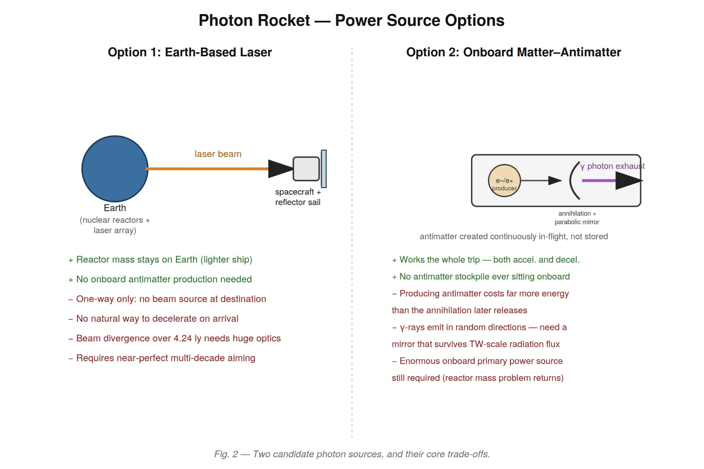

Photon Rocket Propulsion for Interstellar Flight
Introduction
Photon Rocket Propulsion is a theoretical astronautics concept investigating beamed radiation and matter–antimatter annihilation to eliminate the exponential fuel-mass penalties of the classical rocket equation for interstellar journeys.
Chemical and conventional fission rockets hit an impenetrable barrier over interstellar distances: propellant mass. To accelerate a starship to even a modest fraction of light speed within a human-relevant timeframe, the required chemical propellant mass exceeds the mass of the observable universe. A photon rocket bypasses this dilemma by expelling massless photons (p = E/c) as pure reaction mass—trading carried propellant mass for astronomical continuous power generation.
Inspiration
Humanity's ambition to cross the interstellar void and reach Proxima Centauri (4.246 light-years away) within a single generation requires fundamentally rethinking propulsion physics. The starting question: what if a starship carried zero reaction mass and pushed against the universe solely with directed electromagnetic radiation?

Because each individual photon carries a tiny fraction of momentum (p = E/c), generating practical acceleration demands staggering continuous power—shifting the challenge from mass-ratio logistics to terawatt-scale optical engineering and continuous antimatter synthesis.
Technical Details & Approach
Mission Profile and Kinematics
Consider a benchmark interstellar voyage targeting Proxima Centauri, the nearest star system:
| Mission Parameter | Value | Significance |
|---|---|---|
| Target Distance (d) | 4.246 light-years (≈ 4.017 × 1016 m) | Nearest stellar neighbor to Earth |
| Total Voyage Duration (t) | 20 Earth years (≈ 6.312 × 108 s) | Feasible timeline within a human career |
| Flight Trajectory | Constant acceleration (+a) for 10 yrs, midpoint flip, constant deceleration (−a) for 10 yrs | Arrives at destination at rest relative to target star |
Acceleration and Power Budget
Applying the constant-acceleration distance relation across the first half of the trajectory:
For a realistic 100-metric-ton spacecraft (100,000 kg), evaluating these equations yields:
| Physical Parameter | Calculated Value | Engineering Context |
|---|---|---|
| Required Acceleration (a) | 0.403 m/s2 | Gentle ~0.04g acceleration (ideal for structures) |
| Required Continuous Thrust (F) | 40,300 N | F = m · a for 100-ton vehicle |
| Required Beam Power (P) | 12.1 TW (1.21 × 1013 W) | ≈ 60% of humanity's total global electric grid, sustained for 20 years |
| Thrust Efficiency Ratio | ~300 MW / Newton | Derived directly from F = P / c ⇒ P/F = c = 3 × 108 W/N |
Power Source Architectures: Trade-Off Analysis
To supply 12.1 terawatts of continuous directed beam energy, two primary technological paths present themselves:
- Option 1: Earth-Based Beamed Laser: Reactor arrays remain rooted in the solar system, beaming laser energy to an ultra-reflective spacecraft sail. Advantages: Starship carries zero heavy reactor mass, keeping the vessel extraordinarily light. Challenges: Severe beam divergence over 4.24 light-years requiring planet-scale transmission optics; relativistic Doppler redshift degrading received momentum as the ship accelerates away; and no beam emitter exists at the destination to brake the starship upon arrival.
- Option 2: Onboard Matter–Antimatter Annihilation: Photons are synthesized directly onboard via electron–positron (e−/e+) or proton–antiproton annihilation, directed rearward by a parabolic mirror as high-energy gamma-ray exhaust. The Storage Breakthrough: Rather than stockpiling volatile antimatter onboard for decades (a catastrophic containment risk), antimatter is synthesized continuously in micro-quantities in-flight as demanded by the drive.
Historical Lineage and Validation
The photon rocket concept was first formulated in 1953 by German aerospace engineer Eugen Sänger, who derived the exact 300 MW/N thrust relation and proposed matter–antimatter gamma lasers with parabolic reflectors.
Furthermore, the strategy of generating antimatter in-flight to bypass containment hazards independently mirrors physicist Richard Obousy's VARIES concept (Vacuum to Antimatter Rocket Interstellar Explorer System), which relies on Schwinger vacuum pair production driven by intense lasers.
Relativistic Kinematics & Open Bottlenecks
- Relativistic Velocity: Midpoint peak velocity reaches v = a · (t/2) ≈ 1.27 × 108 m/s ≈ 0.42c. At 42% the speed of light, time dilation, relativistic mass dilation, and Lorentz contractions necessitate full relativistic rocket equations rather than classical Newtonian approximations.
- TW-Scale Collimation & Mirror Survivability: Annihilation gamma rays emit isotropically. Collimating terawatts of gamma radiation into a narrow unidirectional beam without mirror ablation or thermal vaporization remains an unsolved materials challenge.
- Radiative Waste Heat Rejection: In the hard vacuum of deep space, even a 0.01% inefficiency in a 12 TW powertrain produces gigawatts of waste heat that can only be discarded through radiative surface panels.
References & Links
- › E. Sänger, “The Theory of Photon Rockets,” Ingenieur-Archiv, 21, 213 (1953).
- › R. Frisbee, “How to Build an Antimatter Rocket for Interstellar Missions,” AIAA Paper 2003-4696.
- › P. Gilster, “Antimatter Propulsion: Birth of a Concept,” Centauri Dreams (2016).
- › Research paper DOI and formal mission analysis publication will be updated soon.